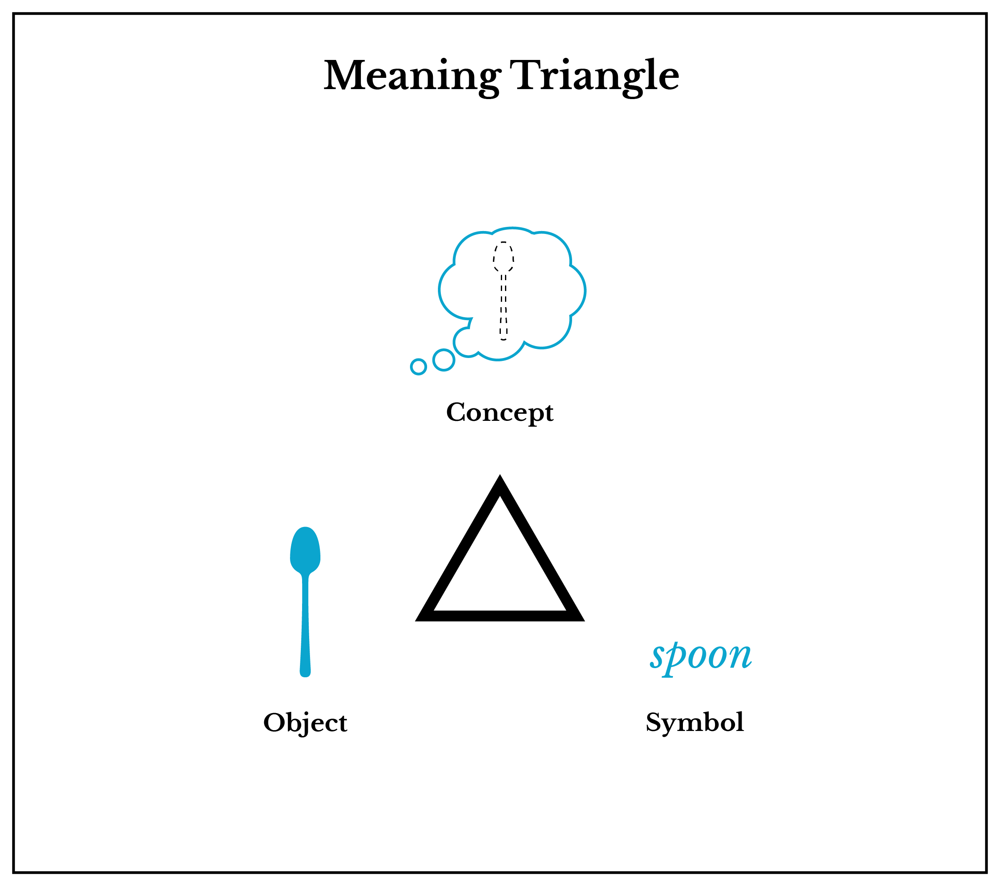

[1]
Semiotics
From nature, we can see that animals have distinctive patterns, textures, and colors which serve both utilitarian and symbolic functions. Vibrantly colored insects may indicate that they are poisonous to predators while bird songs, feathers, and nests communicate sexual fitness to prospective mates. Humans are no different, displaying or obscuring attributes for the same ends. These are semiotic processes. Semiotics is the study of signs, symbols, and their interpretation. [3] The study of semiotic processes are just as relevant in art as they are in computer science. There are many contributors to the field of semiotics, including Roland Barthes and Umberto Eco.
Signs
A sign is composed of a signifier and signified. A signifier is the form of the sign and can be auditory, visual, or physical in nature. A famous play on this idea is the René Magritte painting entitled, The Treachery of Images, where he has painted a pipe above the words, "Ceci n'est pas une pipe." (translation: "This is not a pipe.")[2] In the painting, Magritte paints an iconic image of a pipe, but contradicts the very idea that the image is a pipe with written text. Depending on what the viewer feels is a stronger signifier, they will believe either the text or the image to be true. To understand how a sign is produced, let's look at an excerpt from Eco's Theory of Semiotics:
What happens when I produce a sign or a string of signs? First of all, I must accomplish a task purely in terms of physical stress, for I have to ‘utter’. Utterances are usually considered as emissions of sounds, but one may enlarge this notion and consider as ‘utterances’ any production of signals. Thus I utter when I draw an image, when I make a purposeful gesture or when I produce an object that, besides its technical function, aims to communicate something.[1]
The three categories of signifiers are the (1) Icon, (2) Symbol and (3) Index. An icon resembles some physical attribute of the signified. A symbol is an arbitrary form that is connected to the signified only through cultural association and convention. The fact that you can understand this text is because it is a symbol that you have learned to connect to its corresponding meaning. An index is some manifestation or result of the existence of the signified. For instance, a traffic cone on the highway is an index for a construction zone being present.
The signified is the conceptual idea. If you were to write the word spoon, that word would be a symbol that signifies the referenced object, spoon.
Semiotics is fairly paradoxical, as it is intrinsically linked to culture. To understand why, see the following video collaboration between VOX and 99% Invisible, called Beyond Biohazard: Why Danger Symbols Can't Last Forever.
Semantics
Conceptual semantics focuses on understanding how meaning is formed cognitively. If we look at a diagram of the Meaning Triangle, we can see that there is a sign—an icon, symbol, or index—which in the example in the diagram is written as the symbol "spoon." The concept of a spoon is the thought or mental act associated with referring to the spoon object. The object, also known as a referent, does not have to be a physical thing, just something that is being referred to.

Whenever someone produces something that others will interact with, they are playing in the semiotic realm, and an understanding of these mechanics will help a designer communicate more effectively.
Citations
- ECO, UMBERTO. “THEORY OF SIGN PRODUCTION.” A Theory of Semiotics, Indiana University Press, 1976, pp. 151–313, www.jstor.org/stable/j.ctt16xwcfd.8. René Magritte, The Treachery of Images (1928-9). ("This is not a pipe."). Accessed Dec. 31, 2016. https://www.wikiart.org/en/rene-magritte/the-treachery-of-images-this-is-not-a-pipe-1948
- http://www.jfsowa.com/ontology/ontometa.htm
- Lucie Guillemette and Josiane Cossette (2006), « The Semiotic Process and the Classification of Signs », in Louis Hébert (dir.), Signo [online], Rimouski (Quebec), http://www.signosemio.com/eco/semiotic-process-and-classification-of-signs.asp.